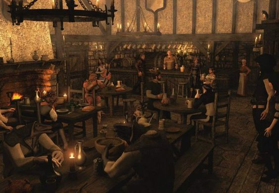

Home About Order Deals Contact
Hello visitor, this is a family-own business that have been operational since 1994. We are determine to make our pizzas in high quality at an affordable price in our modern age. Johnny and Frank are twins brothers that worked in the culinary industry. They would open the family business in 1994, where it is still operational in Zagos of Drerton. Currently in their late 40s, they are still taking turns and operating the pizza shop each year to make sure the family business will get larger and larger. In our modern time, our shop is certified in food preparation, food and work safety, and pass latest inspection.
If you are interest in doing a part time job for our business, we will require a few things before getting started. We would also suggest if you are not good with people or handling people especially beastmen, Elves, Demons, Angels, and more. Please try again after hours. Please go to our contact page to learn more about career opporunities! Click Here to check out our contact page Contact.